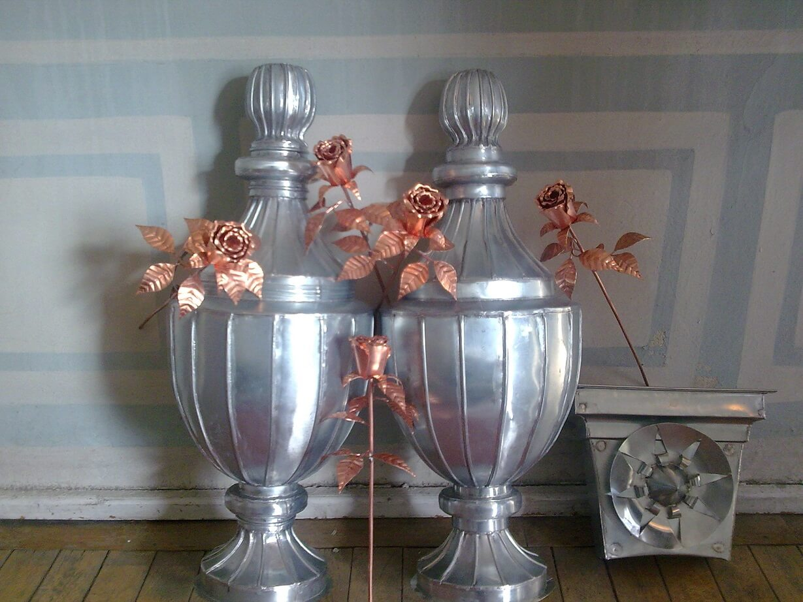

Rzemiosło blacharskie to nasza tradycja rodzinna - tego typu usługi świadczymy już od czterech pokoleń. Dzięki temu zdobyliśmy nie tylko ogromne doświadczenie, ale przede wszystkim zadowolenie i zaufanie naszych klientów. Nie znamy takiego terminu jak zlecenia niewykonalne. Zakres oferowanych przez nas prac jest bardzo szeroki - począwszy od użytkowej blacharki dachowej aż po artystyczne realizacje z blachy miedzianej i cynkowej. Korzystając z bogatych możliwości materiałowych i technicznych, wychodzimy naprzeciw nawet najbardziej wyszukanym projektom indywidualnym, dzięki którym nasi klienci spełniają swoje marzenia dotyczące dachów, tarasów, kuchni czy różnego rodzaju aranżacji zewnętrznych i wewnętrznych.

Nie sposób wymienić wszystkich prac, które wykonaliśmy, ale z dumą możemy stwierdzić, iż jesteśmy współodpowiedzialni za obecny wygląd gmachu Uniwersytetu Warszawskiego (ul. Długa), Akademii Muzycznej w Łodzi, Pałacu w Wilanowie, Pałacu Czapskich (Krakowskie Przedmieście) Pałacu Hrabiego Kreutza w Kościelcu czy budynku Akademii Sztuk Pięknych. To, co robimy to nie tylko praca - to także przyjemność dla nas i zadowolenie dla klientów!